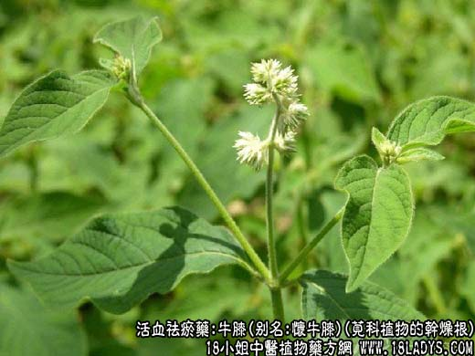
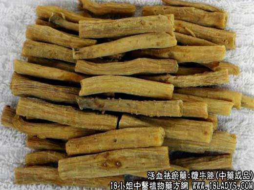

【中药概述】
牛膝，别名：百倍、牛茎、脚斯蹬、铁牛膝、杜牛膝、怀牛膝、怀夕、真夕、怀膝、土牛膝、淮牛膝、红牛膝、牛磕膝、牛克膝、牛盖膝、粘草子根、牛胳膝盖、野牛克膝、接骨丹、牛盖膝头，为苋科植物牛膝的干燥根。苦、酸、平。归肝、肾经。
1、活血祛瘀、补肝肾，强筋骨，利尿通淋，引血下行。
2、生用祛瘀血，引血下行，利关节；熟用补肝肾，强筋骨。
【药物形态】
本品呈细长圆柱形，挺直或稍弯曲，长15～70cm，直径0.4～lcm。表面灰黄色或淡棕色，有微扭曲的细纵皱纹、排列稀疏的侧根痕和横长皮孔样的突起。质硬脆，易折断，受潮后变软，断面平坦，淡棕色，略呈角质样丽油润，中心维管束木质部较大，黄白色，其外周散有多数黄白色点状维管束，断续排列成2～4轮。气微，味微甜而稍苦涩。
【药效鉴别】怀牛膝补肝肾，强筋骨，活血通络，多用于肝肾不足的闭经、痛经，腰膝酸痛。
【药理作用】怀牛膝浸膏及煎剂对离体家兔子宫不论已孕、未孕均有收缩作用。有短暂的降压作用。
【化学成分】含三萜皂甙，水解后生成齐墩果酸，并含大量钾盐。
【用量用法】6——15g，水煎服，或入丸、散剂。
【使用注意】处方上只写处方上只写处方上只写处方上只写“牛膝”时，应付怀牛膝应付怀牛膝应付怀牛膝应付怀牛膝。
【注】怀牛膝属四大怀药之一（山药、地黄、牛膝、菊花）。因其主产于河南新乡（过去称“怀庆府”）等县故名。呈细长圆柱形，上端较粗。表面灰黄色或淡棕色。质硬脆，受潮变柔韧，易折断。中间有木心。断面平坦黄棕色微呈角质状、有筋脉点（维管束）类白色排列成1：8圈、中心维管束较大黄白色。微有酸气味微甜而苦涩。
除非注明，文章解释权均归中药大全所有，欢迎转载！转载请注明本文地址，谢谢。本文地址： https://www.daquan.com/post/2006.html